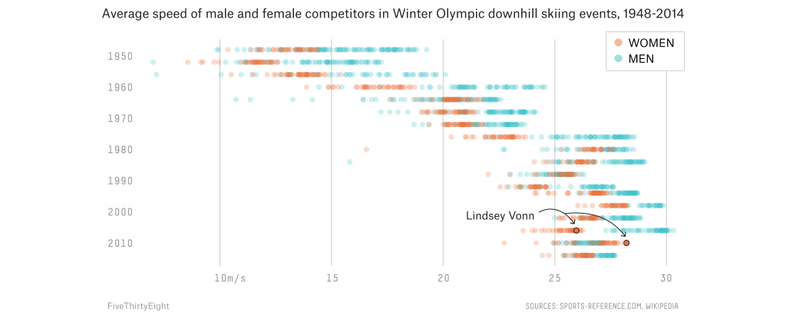
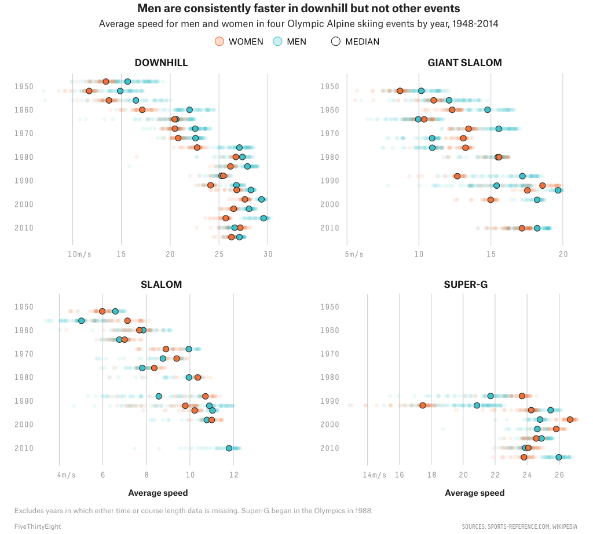

Women have but one task, that of the role of crowning the winner with garlands … in public competitions, women’s participation must be absolutely prohibited. It is indecent that spectators should be exposed to the risk of seeing the body of a women being smashed before their eyes.